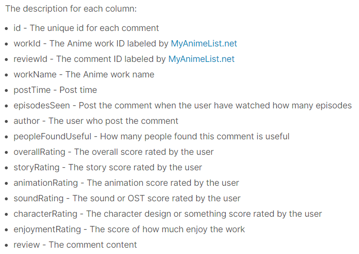
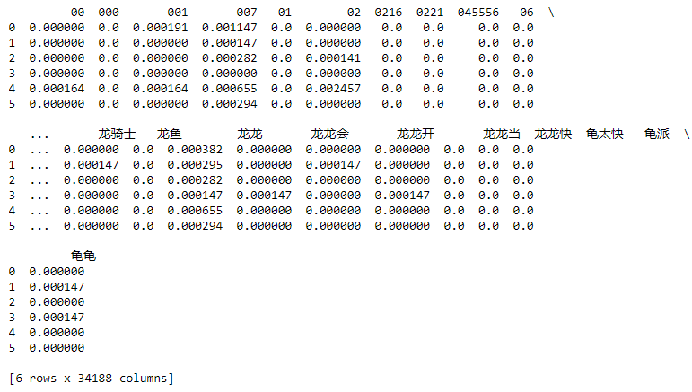
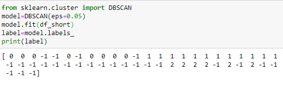

Intro
|
The goal of this part is trying to find appropriate classfications for current datasets using clustering methods. |
About Datasets
Record Data
|
The record data comes from the following link. Its original source is MyAnimeList kaggle.com/natlee/myanimelist-comment-dataset The link for downloading is here: It collects more than 130000 reviews composed of texts and ratings on animes. The description is here: 
Then I eliminated all the non-numeric columns and fixed the missing values. The remaining columns are mostly about ratings on different aspects. |
A brief look: |
Text Data
|
The text data is the clean data from the Data Cleaning part, which is a Document-Word matrix of bullet screens contained by 51 episodes from 4 animes. (With episodes being the line, animes being the label.) In fact I made some adjustments to the original data-cleaning codes--I added more stopwords because that's necessary for achieving better results in this part. |
A brief look:

|
R Part
| I wanted to use different clustering methods to find if reviews could be classified by the ratings on different aspects as well as some other attributes. |
K-Means
Best Choice of K
|
I used the methods of Elbow, Silhouette, Gap_Stat. The results showed that the best K may be between 2 and 5. In Elbow method, we calculate Total Within Sum of Square for each K. If at some point the sum decreases most dramatically, we think that's the best K. One possible way to have an automatic algorithm is to calculate the tangent values of angles formed by the two intersected lines at each point and select the one with the largest absolute value. In Silhouette method, we use a metric to describe the distances of elements in the same group and the distances between different groups. The larger the metric value, the more likely elements within the same group are close to each to other and the more likely different groups are away from each other. The advantage of this method is that we can simply select the maximum point as the best K. In Gap_Stat method, we use a Monte-Carlo simulation to calculate a metric somehow relevant to entropy decrease. The computation process is obviously much longer than the above two. |
Elbow: Silhouette: Gap_Stat: |
K-Means Process
|
I apply the K-Means by having the k=2,3,4,5. What I achieved are different classifications which could be used as the labels for the reviews. By using the visualization generated by fviz_cluster, we can observe that the classification is mainly impacted by the first component in PCA. And as k increases, impacts of other components on the classification increase. |
Hierarchical Clustering
| I decided to perform the Hierarchical Clustering on the subset of reviews on one anime. (Parallel computation is not supported in R, computation of distance matrices on the whole dataset would cause memory overflow. So what I can do is just restrict it on a much smaller subset.) |
Distance Matrix under Different Metrics
|
I computed the distance matrices under metrics of Euclidean metric, Manhattan metric and Cosine metric. The corresponding code is attached on the right. |
Dendrogram
|
I drew the three dendrograms under different metrics. The dendrograms are somehow different from each other. Directly, estimation of the best choice of K may be between 2 and 5. |
Euclidean Manhattan Cosine |
Best Choice of K
|
By using the function of fvis_nbclust, we can have the pic on the right. So we choose K to be 5. |
Gap_Stat |
2D Visualizations given K = 5
|
We have the pics on the right. We can see while the cosine metric is different from the other two, the Euclidean and Manhattan metrics are similar. Perhaps that's because they are both special cases of Minkowski metric. |
Euclidean Manhattan Cosine |
Short Summary
|
By applying different clustering methods, I can achieve different labels for the original dataset. One downside of fviz_cluster is that we do not know how much each of the original columns contribute to the first component in PCA. Since humans could only perceive images of no more than 3D, maybe it's better to use some numerical metrics the mesure how much each dimension contribute to the clustering result. It's really difficult to find huge datasets with many numeric columns on the topic of anime. Almost all the datasets are about ratings or images. Maybe the anime datasets are more suitable for CV. But it's still a good practice for me. |
Rscripts
The link of the Rscript, which did all the things above, is here:
Python Part
By using the clustering methods, I want to have the correct classficition for bullet screens of episodes from different animes.
Best Choice of K
|
Using the Elbow method, I want to find out the approximate ranges for good choices of K. That's between 2 and 4. (Although we can have an automatic selection algorithm for Elbow method, I think it's better to check the values around the best options when the best K is rather small.) |
K-Means
|
Although it is supposed that the best K should be within [2,4], the smallest K to classify the datasets into 4 animes is 9. It seems that always the last episodes of each anime are first deteced to be within the same cluster and then the difference of some special episodes and finally the difference of episodes in four animes. Quite frustrating. |
Agglomerative Clustering
|
The similar situation happens in Agglomerative Clustering with Euclidean and Manhattan metrics. The smallest Ks to detect the different of 4 animes are 9 and 8. But there is a rather excellent result in Agglomerative Clustering with Cosine metrics. The best K is 5. The model first detects the difference of the last episodes of each anime. And then within 4 step of increase, the model is able to classify all the remaining episodes into 4 animes. Perhaps Cosine metrics is just suitable for this situation. |
Euclidean Manhattan Cosine |
DBSCAN
|
DBSCAN just doesn't work well here no matter what epsilon is selected. I think that's because there are only 51 points here and the differences are not that obvious. |

|
Features in the Last Episodes
|
In order to solve the mystery, I created the wordcloud visuals of each episodes and I found the answer. In the last episode of each anime, users always create bullet screens containing words of Goodbye End Grateful Thanks Accompany. (I made my best to translate those into English.)In Chinese, those are words to show gratitude, expressing unwillingness to part, which are reasonable and unique for the last episode. |
Black-Heart CompanyEpisode 8 and 10  |
Short Summary
|
The cosine distance metric is suitable for classifying the bullet screens here. That's kind of interesting. If I add more words to the stopword set about the last-episode words, I can achieve a even better result. But those words are something precious recording the audience's feelings. So I choose to reserve them. |
Python scripts
The link of the Python scripts, which did all the things above, is here: